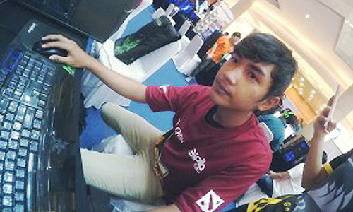

Perpindahan roster, InyourDreaM jajal ESL One Genting Malaysia 2016 bersama Fnatic

Muhammad Rizki, Pemain Profesional Dota2 asal Indonesia pertama yang di rekrut Fnatic
Memiliki profesi yang sesuai dengan minat tentu saja adalah dambaan setiap manusia. Muhamad Rizki, pemain dota2 asal Indonesia sudah di resmikan di langsung oleh Fnatic. Dalam pers release tersebut, InYourDream tercatat memiliki peran penting dalam tim Fnatic. Bagaimana tidak, ia akan berkolaborasi dengan pemain ikonik Fnatic yakni Yee Fung "Mushi" Chai sebagai seorang Carry dan juga Midlaner. Seperti yang dilansir Indogamers . Tidak hanya menginformasikan role saja, melalui pers release tersebut Fnatic juga mengumumkan susunan pemain yang akan bertarung di ESL One Genting nanti. Berikut ini data selengkapnya:
- Yee Fung "Mushi" Chai role Mid/Carry
- Muhammad Rizky "Inyourdream" Anugrah role Mid/Carry
- Chong Xin "Ohaiyo" Khoo role Offlaner
- Yong-min "Febby" Kim role Roaming Support
- Ng "YamateH" Wei Poong role Hard Support
Di ESL One Genting, Fnatic akan bertarung dengan Virtus Pro dalam laga pembuka. Pertandingan kedua tim tersebut akan dimulai pada tanggal 6 Januari 2017 jam 12.30 siang waktu setempat. ESL One Genting bisa dibilang salah satu turnamen eSports terbesar saat ini. Total hadiahnya pun tidak main-main yaknu USD 250.000. Well, sebagai orang Indonesia tentunya kita harus berbangga dengan prestasi yang berhasil diraih InYourDream!
Kembali ke list berita